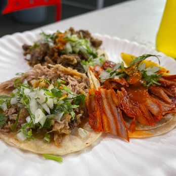
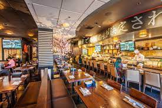

Matcha

Matcha is my favorite drink. I make it every morning. All you need is a teaspoon of ceremonial grade matcha, a teaspoon of agave nectar, a teaspoon of hot water, and a cup of oat milk! Matcha is a type of powdered green tea that's rich in antioxidants.
With traditional green tea, the leaves are steeped in hot water and then discarded. But with matcha, the dried leaves are actually ground into a powder, mixed into the drink, and consumed. The tea has a unique, non-bitter taste and vibrant green color and is regarded as the most aromatic form of green tea (health, 2022).
Tacos
My favorite taco place is called Tacos Tamix. They specialize in al pastor tacos and have a great ambiance outisde! Great spot for USC students as it's in the fryft zone! Some trucks think soft globs of reddish pork, warmed momentarily on a griddle, suffices.
Others keep their offering drier and more crumbly, letting fiery salsa rojas take center stage. But without the vertical spit, pressed tightly with marinated pork and topped with a large chunk of pineapple, you'd be hard-pressed to find al pastor worth the late-night calories.
Sushi
Tenno sushi is the best sushi spot in Little Tokyo in my opinion. My friends and I go there almost every weekend. Their bio says "Tenno Sushi is a high quality restaurant for Lunch & Dinner. We strive to provide a fresh new taste for busy "On the go" people, who want a healtheir & tastier meal. Tenno Sushi catering promise that our chef's wouldn't think of pre-making sushi.
It's all made to order every order. We welcome phone ahead, take out and catering orders. Please visit us often, bring you friends and family, and experience the joy that is Tenno Sushi."